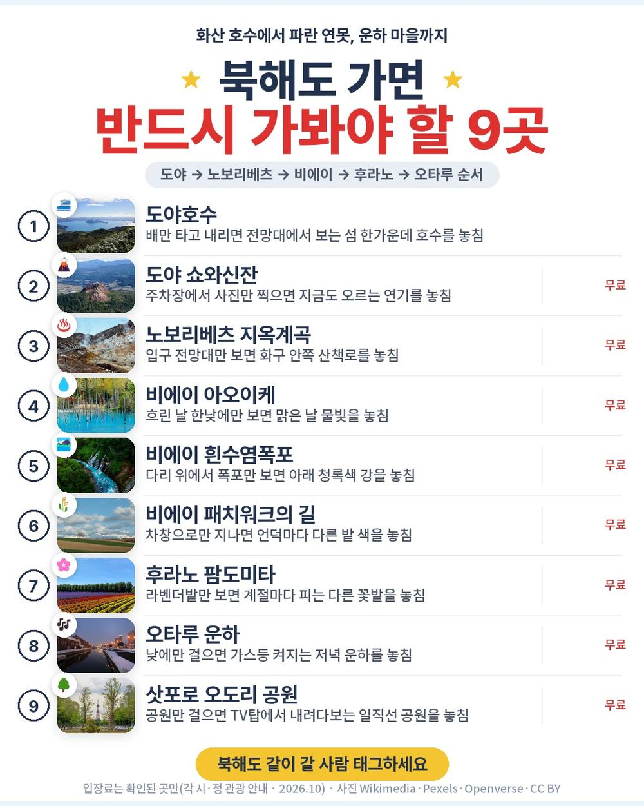
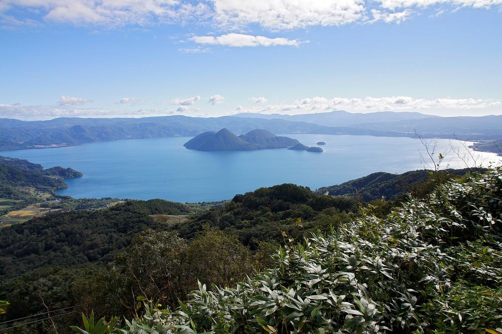
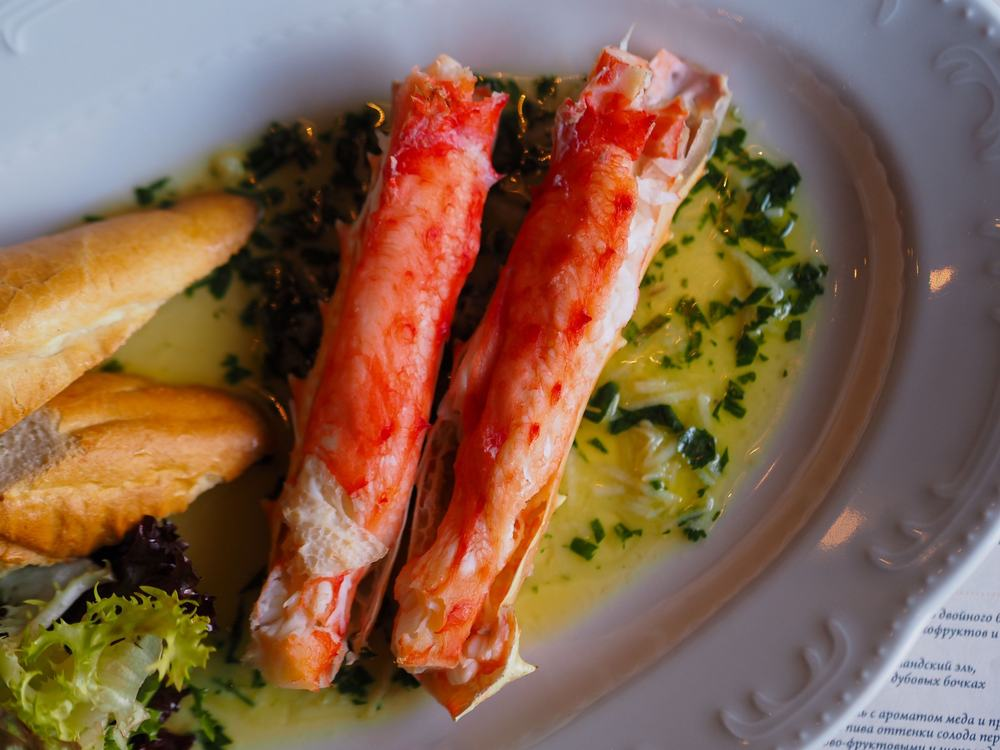
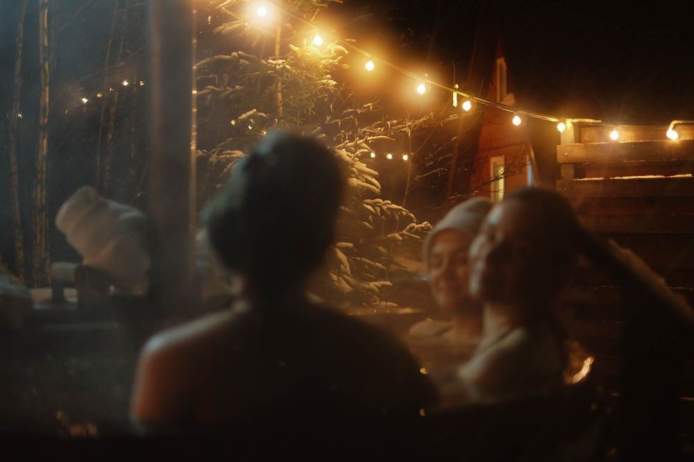
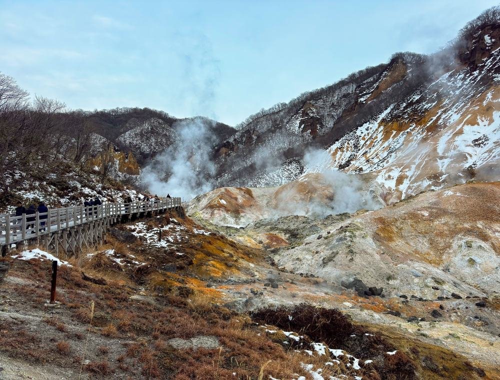
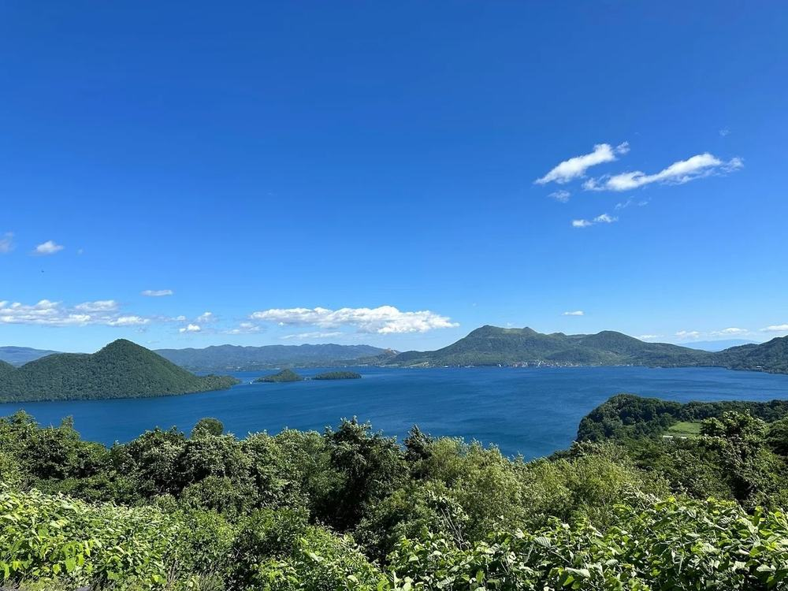
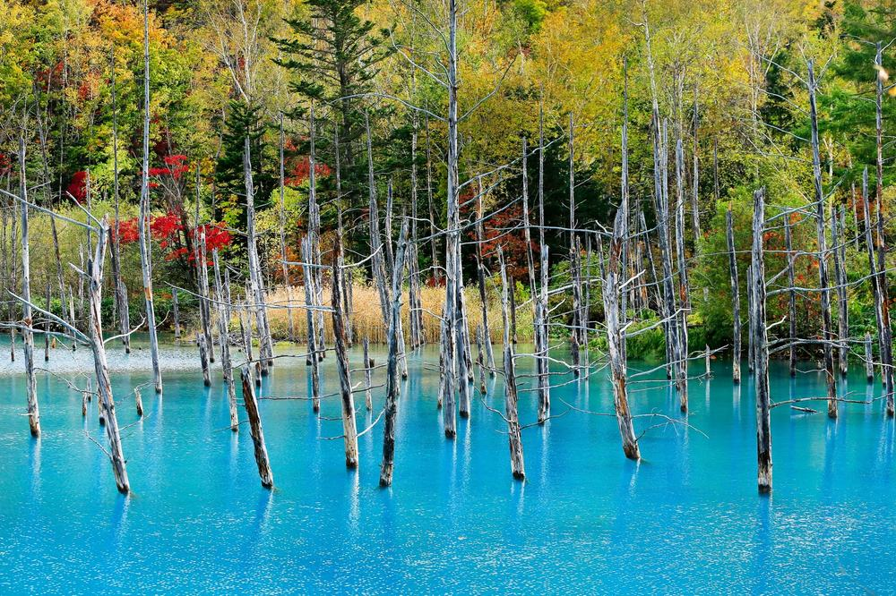
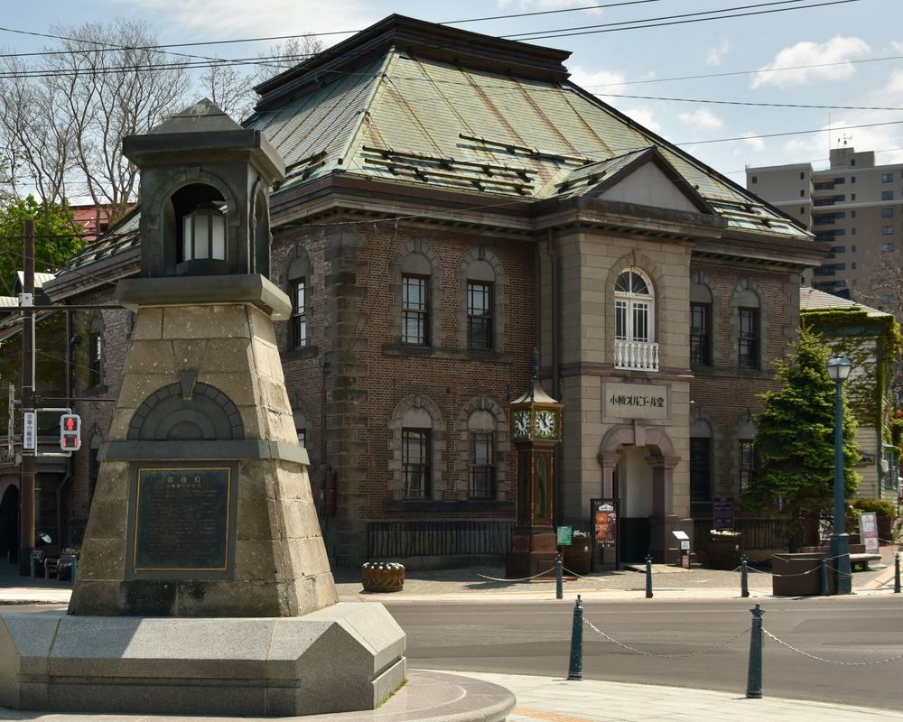

노랑풍선 부산출발 북해도 패키지 여행 102만원대, 도야 유람선부터 오타루까지 낮 비행기로 도는 4일

부산에서 북해도를 알아보면 인천 출발 상품이 훨씬 많고, 부산 출발은 새벽이나 밤 비행기가 섞여 있음. 부모님 모시고 가려니 비행 시간대부터 걸렸음.
그러다 노랑풍선 상품이 눈에 들어옴. 김해 낮 1시 50분 출발, 돌아오는 비행기도 오후 5시 10분이고, 도야·노보리베츠·비에이·후라노·오타루를 나흘에 다 돎. 대신 3일차 버스가 긴 편임.
결론 — 추천. 진에어 부산 직항에 온천욕 있는 호텔 2박 + 삿포로 시내 1박, 선택관광 0개, 도야호수 유람선·지옥계곡·아오이케·흰수염폭포·오타루까지 포함임. 다만 하루 버스를 오래 타기 힘든 분, 공용 온천 대욕장이 불편한 분, 11월 비에이 꽃밭을 기대하는 분은 아님.
102만 3,600원이 어디에 들어갔는지, 현지에서 더 내는 돈은 얼마인지 원문을 하나씩 뜯어봤음.
| 항목 | 내용 |
|---|---|
| 가격 | 1인 1,023,600원 (성인 · 11월 출발 기준) |
| 여행사 | 노랑풍선 |
| 항공 | 진에어 직항 · 김해 13:50 → 신치토세 16:10 / 신치토세 17:10 → 김해 19:55 |
| 숙소 | 1일차 온천 호텔(세 후보 중 한 곳) · 2일차 아파 호텔&리조트 삿포로 · 3일차 삿포로 시내 호텔 · 출발 7일 전 문자 안내 |
| 일정 | 3박 4일 · 전용 버스 · 한국어 가이드 · 식사 8회 · 쇼핑 1회 · 선택관광 0 |
| 가는 곳 | 도야호수 유람선·쇼와신잔·사이로 전망대 · 노보리베츠 지옥계곡 · 비에이 아오이케·흰수염폭포·시키사이노오카·패치워크·탁신관 · 후라노 팜도미타 · 오타루 운하·오르골당·기타이치가라스관 · 삿포로 오도리 공원·스스키노 |
▶ 내 출발일 오늘 기준 요금 확인 (제휴 링크 · 예약 시 수수료를 받으며 가격은 같습니다)
▶ 10월 15일 기준 북해도 패키지 최저 90만 6,700원부터 — 출발일별 값 한 화면에: 비교 페이지
같은 일정을 에어부산으로 가는 상품은 1인 906,700원임 (10월 15일 기준 · 출발일마다 다름). 비행 시간대가 맞으면 그쪽도 같이 보면 됨.
| 순서 | 다루는 것 | 한 줄 결론 |
|---|---|---|
| 1 | 구성 뜯어보기 | 선택관광 0, 현지 추가금은 가이드 경비 4만원 + 3일차 저녁 |
| 2 | 일정 살펴보기 | 3일차 비에이·후라노가 버스 가장 긴 날 |
| 3 | 자유여행 VS 패키지 | 직접 짜면 95만원 | 패키지가 11만원쯤 더 들고, 그 값에 나흘 운전·가이드·대게 저녁 |
1. 구성 뜯어보기
요약 — 진에어 부산 왕복·호텔 3박·식사 8회·관광 입장·유람선·가이드·전용 버스·보험이 들어 있음. 선택관광은 0, 쇼핑은 1회, 현지에서 더 내는 건 가이드·기사 경비 1인 4만원과 3일차 저녁값임.
1-1. 102만 3,600원에 들어 있는 것

포함 항목을 정리하면 이럼.
- 진에어 김해–신치토세 직항 왕복 항공권 + 유류할증료·세금
- 호텔 3박 (2인 1실) · 1·2일차는 일정에 온천욕 포함
- 식사 8회 (대게 뷔페+샤브샤브 · 해물철판 · 스프카레 또는 오무카레 포함)
- 관광지 입장료(도야호수 유람선 포함) · 전용 버스 · 한국어 가이드
- 여행자보험
이 상품의 차별점은 부산에서 낮 비행기로 북해도 대표 코스를 한 바퀴 돈다는 것임. 남쪽 도야·노보리베츠, 가운데 비에이·후라노, 서쪽 오타루까지 빠지는 곳이 없음.
출발일별 요금 확인하기
https://naver.me/Ge7ylk7T
1-2. 식사 여덟 번, 비는 끼니 하나

식사는 8회임. 1일차 저녁(호텔식), 2일차 아침·점심·저녁, 3일차 아침·점심, 4일차 아침·점심이 들어 있음. 2일차 저녁이 대게 뷔페 + 샤브샤브임.
비는 끼니는 3일차 저녁 하나임. 삿포로 번화가 스스키노에서 자유식이라, 라멘이나 스프카레를 골라 먹으면 됨.
1-3. 호텔

첫 밤은 조잔케이 뷰 호텔, 샤토레제 가토킹덤 삿포로, 도야 썬팔레스 리조트&스파 중 한 곳이고, 출발 7일 전에 문자로 알려 줌. 둘째 밤은 아파 호텔&리조트 삿포로임. 두 밤 다 일정표에 온천욕이 적혀 있음.
셋째 밤은 삿포로 토라베롯지나 스마일 호텔 프리미엄 스스키노급 시내 호텔임. 상품 이름엔 온천호텔 3박이라고 돼 있지만 일정표상 셋째 밤은 시내 호텔이라, 온천은 첫째·둘째 밤에 한다고 보면 됨. 혼자 방을 쓰면 전 일정 200,000원이 붙음.
1-4. 현장에서 더 낼 돈
| 항목 | 금액 | 비고 |
|---|---|---|
| 가이드·기사 경비 | 80,000원 | 1인 40,000원 × 2 (성인·소아 같음, 원화) |
| 3일차 저녁 | 각자 | 스스키노 자유식 |
| 선택관광 | 0원 | 선택관광 없음 |
| 합계 (2인) | 80,000원 + 3일차 저녁 | 상품가 204만 7,200원 + 8만원 = 약 213만원 |
두 사람이면 약 213만원, 한 사람으로 치면 약 106만원임. 여기에 3일차 저녁값과 개인 경비(엔화)만 더하면 됨.
1절 자주 나오는 질문
Q. 선택관광은 정말 없나요?
A. 없음. 선택관광 항목이 비어 있고, 도야호수 유람선 같은 입장료가 상품가 안에 들어 있음.
Q. 쇼핑은 몇 번인가요?
A. 1회임. 4일차 일본관광공사 면세점(잡화) 약 40분이고, 사는 건 자유임.
Q. 온천은 몇 번 하나요?
A. 일정표상 1일차와 2일차 밤에 온천욕이 있음. 셋째 밤은 삿포로 시내 호텔임.
2. 일정 살펴보기
요약 — 1일차 낮 비행기로 온천 호텔, 2일차 도야호수·쇼와신잔·지옥계곡 뒤 삿포로 대게 저녁, 3일차 비에이·후라노 왕복 뒤 스스키노 자유 저녁, 4일차 오타루·오도리 공원과 쇼핑 1회 뒤 오후 비행기로 귀국.
2-1. 하루하루 어디를 가나

| 일차 | 가는 곳 | 식사 | 숙소 |
|---|---|---|---|
| DAY 1 | 김해 13:50 출발 → 신치토세 16:10 도착 → 온천 호텔 체크인·온천욕 | 석 호텔식 | 온천 호텔(세 후보 중 한 곳) |
| DAY 2 | 도야호수 유람선(약 50분)·쇼와신잔·사이로 전망대 → 노보리베츠 지옥계곡 → 삿포로 | 조 호텔식 · 중 현지식 · 석 대게+샤브샤브 | 아파 호텔&리조트 삿포로 |
| DAY 3 | 비에이 아오이케·흰수염폭포·시키사이노오카·패치워크·탁신관 → 후라노 팜도미타 → 삿포로 스스키노 | 조 호텔식 · 중 현지식 · 석 자유식 | 삿포로 시내 호텔 |
| DAY 4 | 오타루 운하·오르골당·기타이치가라스관 → 오도리 공원 → 쇼핑 1회 → 신치토세 17:10 출발 → 김해 19:55 도착 | 조 호텔식 · 중 현지식 | — |
| 일차 | 버스 이동 | 걷기 | 포함 식사 |
|---|---|---|---|
| DAY 1 | 약 1.5시간 | 적음 | 석 호텔식 |
| DAY 2 | 약 3.5시간 | 보통 | 조 호텔식 · 중 현지식 · 석 현지식 |
| DAY 3 | 약 5시간 | 보통 | 조 호텔식 · 중 현지식 |
| DAY 4 | 약 2.5시간 | 보통 | 조 호텔식 · 중 현지식 |
| 합계 | 약 12.5시간 | - | 8끼 (호텔식 4 · 현지식 4) |
요약 — 버스 이동은 4일 동안 약 12.5시간, 포함 식사는 8끼(호텔식 4 · 현지식 4)임. 버스가 가장 긴 날은 DAY 3임.
2-2. 1일차·2일차 — 온천, 그리고 화산 호수

낮 1시 50분 비행기라 오전엔 여유가 있음. 신치토세에 4시 10분에 내려 온천 호텔로 가고, 이날은 저녁이 호텔식으로 포함임.
2일차 아침엔 도야호수 유람선을 약 50분 탐. 1943년 땅이 솟아 생긴 화산 쇼와신잔을 보고 사이로 전망대에서 호수를 내려다본 뒤, 노보리베츠 지옥계곡 산책로를 걸음. 저녁은 삿포로에서 대게 뷔페와 샤브샤브임.
2-3. 3일차 — 비에이와 후라노

아침엔 아오이케와 흰수염폭포를 봄. 이어서 전망화원 시키사이노오카, 언덕 밭이 조각보처럼 이어진 패치워크의 길(날씨·도로 사정에 따라 차창), 사진 갤러리 탁신관을 지나 후라노 팜도미타로 감.
꽃은 5~7월이 제철이고 라벤더 절정은 7월 중순임. 11월 출발이면 꽃밭이 아니라 넓은 언덕 풍경이라는 걸 알고 가면 실망이 없음. 이날이 버스를 가장 오래 타는 날이라 목베개가 있으면 편함.
2-4. 4일차 — 오타루와 오도리 공원

석조 창고가 늘어선 오타루 운하, 오르골이 1만 5천 점 있는 오르골당, 유리 공예품 가게 기타이치가라스관을 봄. 삿포로로 돌아와 TV탑 아래 오도리 공원을 걷고 면세점 한 곳을 들른 뒤 공항으로 감. 비행기가 오후 5시 10분이라 점심까지 먹고 옴.
2절 자주 나오는 질문
Q. 많이 걷나요?
A. 2일차 지옥계곡 산책로(약 600m, 15분쯤)와 4일차 오타루 거리가 걷는 구간임. 나머지는 버스로 옮겨 다니며 짧게 걷는 편임.
Q. 비행기는 몇 시인가요?
A. 진에어 직항이고 김해 13:50 출발 → 신치토세 16:10 도착, 귀국은 신치토세 17:10 출발 → 김해 19:55 도착임. 새벽·밤 비행기가 아님.
Q. 준비할 건 뭔가요?
A. 원문 안내로 현지 기온이 한국보다 3~5도 낮아 11월이면 두꺼운 겉옷이 필요함. 콘센트는 11자라 멀티어댑터를 챙기고, 일본 입국 때 지문 인식을 함. 개인 경비는 엔화로 준비하면 됨.
3. 자유여행 VS 패키지 | 직접 짜면 95만원
요약 — 같은 일정을 직접 짜면 1인 95만원쯤 듦. 패키지는 가이드 경비를 더해 약 106만원이라 11만원쯤 더 들고, 그 값에 나흘 운전·가이드·대게 저녁이 들어 있음.
3-1. 같은 일정을 직접 짜면

같은 일정을 혼자 짠다고 치고 항목별로 계산해 봄. 11월 초 출발, 2인 1실 1인분임. 항공 말고는 추정치라 근거 열에 적어 둠.
| 항목 | 금액 | 근거 |
|---|---|---|
| 부산–삿포로 왕복 항공 | 403,500원 | PUS↔CTS 직항 왕복 1인 40만 3천원 (패키지와 같은 출발일 · 2026-10-15 마이리얼트립 조회) |
| 온천 호텔 2박 (1박 2식) | 240,000원 | 2인 1실 1인분 × 2 (추정) |
| 삿포로 시내 호텔 1박 | 70,000원 | 2인 1실 1인분 (추정) |
| 식사 (점심 3 · 저녁 1) | 80,000원 | 대게 저녁 포함 현지식 기준 (추정) |
| 공항 이동 · 렌터카 3일 | 120,000원 | 렌터카·기름·통행료 2인 나눔 (추정) |
| 입장료·유람선 | 20,000원 | 도야호수 유람선 등 (추정) |
| 여행자보험 · 유심 | 20,000원 | 4일 기준 |
| 가이드 | — | 자유여행은 없음 |
| 합계 | 약 953,500원 |
직접 짜실 분은 이 날짜 항공권부터 보세요 — https://myrealt.rip/vuyncf (마이리얼트립 제휴 링크)
패키지는 1,023,600원에 가이드 경비 4만원을 더해 약 106만원임.
3-2. 그래서 뭐가 다른가
직접 짜면 11만원쯤 아끼는 대신, 나흘 동안 북해도를 운전해야 함. 도야·노보리베츠와 비에이·후라노는 삿포로에서 방향이 반대라 하루씩 따로 다녀와야 함.
- 일본은 좌측 통행이라 운전이 낯선 분이 많음
- 비에이·후라노 왕복은 하루 운전이 긴 구간임
- 온천 호텔 저녁 시간에 맞춰 도착하도록 동선을 직접 짜야 함
패키지는 이 전부가 전용 버스 한 대로 붙고, 한국어 가이드가 붙음. 자유여행 계산표에 가이드 행이 비어 있는 게 그 뜻임 — 0원이 아니라 살 수 없는 것임.
3-3. 어느 쪽이 맞나
| 자유여행이 맞음 | 패키지가 맞음 |
|---|---|
| 일본 운전이 익숙함 | 운전 없이 다니고 싶음 |
| 삿포로 한 곳에 오래 머물고 싶음 | 도야·비에이·오타루를 한 번에 돌고 싶음 |
| 숙소를 직접 고르고 싶음 | 부모님과 무리 없이 돌고 싶음 |
| 저녁을 매일 직접 고르고 싶음 | 대게 저녁까지 맡기고 싶음 |
3절 자주 나오는 질문
Q. 자유여행이 더 싸지 않나요?
A. 계산해 보면 자유여행이 약 95만원, 패키지가 가이드 경비를 더해 약 106만원임. 11만원쯤 차이고, 그 차이가 나흘 운전과 가이드, 유람선·대게 저녁 값임.
Q. 같은 북해도인데 더 비싼 패키지는 뭐가 다른가요?
A. 같은 북해도 3박 4일에 164만 9천원 상품도 있음. 비교해 보면 그쪽은 쇼핑이 없고 가이드 경비가 포함임. 쇼핑 40분 한 번과 가이드 경비 4만원이 괜찮으면 이 상품으로 대표 코스는 다 돎.
Q. 부산 출발이라 불편한 점은 없나요?
A. 김해에서 신치토세까지 직항 2시간 25분이라 인천까지 올라갈 필요가 없음. 비행 시간대가 낮이라 공항 가는 길도 여유 있음.
마무리
정리하면 이럼.
추천함. 102만 3,600원에 진에어 부산 직항, 온천욕 있는 호텔 2박과 삿포로 시내 1박, 식사 8회, 도야호수 유람선·지옥계곡·아오이케·흰수염폭포·팜도미타·오타루가 들어 있음. 선택관광이 없고, 현지에서 더 내는 건 가이드 경비 4만원과 3일차 저녁값임.
이런 분은 고르면 안 됨. 하루 버스를 오래 타기 힘든 분, 공용 온천 대욕장이 불편한 분, 11월에 비에이 꽃밭을 기대하는 분.
| 맞는 사람 | 안 맞는 사람 |
|---|---|
| 북해도가 처음인 부산·경남 분 | 하루 버스가 길면 힘듦 |
| 새벽 비행기가 힘듦 | 공용 온천이 불편함 |
| 선택관광 권유가 싫음 | 11월에 꽃밭을 보고 싶음 |
걸리는 점이 있긴 한데 상품 흠이라기보다 맞는 사람과 안 맞는 사람을 가르는 조건에 가까움.
오늘 기준 출발일별 요금 보기
https://naver.me/Ge7ylk7T
같은 목적지 다른 여행사 패키지, 쇼핑·선택관광·가이드 경비까지 비교
https://pkg-lab.com/go/?q=%EB%B6%81%ED%95%B4%EB%8F%84&utm_source=blog&utm_medium=post&utm_campaign=daily
함께 보면 좋은 글
노랑풍선 후쿠오카 패키지 여행 94만 9천원, 온천 두 밤에 게 뷔페·술 무제한까지?
https://blog.naver.com/robotnady10/224440999967
노랑풍선 홍콩 마카오 패키지 여행 132만원대, 부모님이랑 낮 비행기로 두 도시 가도 될까
https://blog.naver.com/robotnady10/224439979699
이 글에는 네이버·마이리얼트립 제휴 링크가 포함되어 있으며, 링크를 통해 예약하시면 일정 수수료를 받습니다. 가격은 동일합니다. 가격과 구성은 2026년 10월 15일 확인 기준이며 출발일에 따라 달라질 수 있습니다.
▶ 이 상품, 영상으로 보기 (유튜브)
▶ 북해도 패키지 오늘 값 나란히 비교
▶ 같은 목적지 다른 여행사 패키지, 쇼핑·선택관광·가이드 경비까지 비교: pkg-lab.com